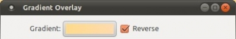
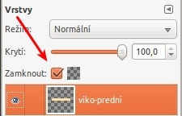

Web je již jen v režimu pro čtení a není možné přidávat nové komentáře nebo dotazy do fóra. Díky za přízeň.
Main menu
You are here
Krabice - 1. část
12. March 2011 - 15:15 — Lukáš
Abyste tutoriál zvládli, potřebujete plugin Layer Effects.
- Vytvoříme nový obrázek s rozměry 600x600px
- Barvu popředí nastavíme na #ab6808. Barvu pozadí na #f8bf5b
- Přejdeme na Script-fu → Layer effects → Gradient Overlay. Nastavíme takto:
- Vznikne nám nová vrstva s přechodem. Posuneme ji pod bílou vrstvu Pozadí.
- Nastavíme si barvu popředí na #ffdc8e a barvu pozadí na #ffdcaf. Zkontrolujeme si, že máme aktivní bílou vrstvu Pozadi a znovu přejdeme na Gradient Overlay. Nastavení necháme totožné, jen u položky Gradient zaškrtneme „Reverse“.
 - Vznikne nám další vrstva (Pozadí-gradient#1). Vrstvu Pozadí můžeme smazat.
- Vytvoříme novou (průhlednou) vrstvu. Přejdeme na Filtry → Mapa → Mapovat objekt. Nastavíme podle obrázků:
- Gimp nám vytvoří nový obrázek – základ krabice, kterému se budeme věnovat. Starý obrázek můžeme zavřít, už nebude potřeba.
- Vlevo uvnitř naší pomyslné krabice je opravdu ošklivý silný stín. Nahradíme jej proto stínem z pravé strany.
- Přejdeme na Obrázek → Vodítka → Nové vodítko (podle procent). Vytvoříme nové svislé vodítko v polovině obrázku.
- Pravou půlku obrázku označíme pomocí nástroje Obdélníkový výběr. Přejdeme na Upravit → Kopírovat a poté na Upravit → Vložit. Pokud se koukneme do okénka Vrstvy, vidíme, že zde přibyl „Plovoucí výběr“. Stiskneme proto CTRL + Shif + N a z plovoucího výběru se stane nová vrstva. Nyní nástrojem Přesun přemístíme naši zkopírovanou půlku krabice na levou stranu a pomocí nástroje Překlopení vrstvu (svisle) překlopíme.
- Nyní můžeme obě vrstvy sloučit (CTRL+M). A vodítko odebrat. (Obrázek → Vodítka → Odstranit všechna vodítka).
- Krabici nástrojem Škálování zmenšíme na 450x450px a nástrojem Zarovnání zarovnáme na střed.
- Klepneme na Vrstva → Velikost vrstvy dle obrázku a poté na Vrstva → Průhlednost → Alfa do výběru. Nyní přejdeme na Obrázek → Vodítka → Nová vodítka z výběru.
- Pokud si nyní přiblížíme horní hranici krabice, zjistíme, že vodítko je trochu výš, než hranice krabice (viz. Obrázek výš). Přesuneme jej tedy na správné místo.
- Vytvoříme ještě jedno nové vodítko u spodní hranice (viz obrázek níže)
- Přejdeme na Vybrat → Nic a vytvoříme novou vrstvu. Pojmenujeme ji např. „viko-predni“
- Provedeme obdélníkový výběr. Obdélník by měl být vysoký cca 65px
- Výběr vyplníme bílou barvou. Přejdeme na Menu Obrázek → Vodítka a zvolíme Nová vodítka z výběru. Potom přejdeme na Vybrat → Nic.
- Natáhneme si nová svislá vodítka, viz. Obrázek níže
- Přejdeme na Vrstva → Automaticky oříznout vrstvu. Nástrojem perspektiva obdelník natáhneme k vodítkům.
- Barvu pozadí nastavíme na #ffdc8e a barvu popředí na #ffdcaf. Vybereme nástroj Přechod, nastavíme jej na „Popředí do pozadí“. Ujistíme se, že pracujeme s vrstvou „viko-predni“ a v okénku Vrstvy zaškrtneme „Zamknout Alfa kanál“.
 - Přechodem „přetáhneme víko“.
{kind=link}
{kind=link}
{kind=link}
{kind=link}
{kind=link}
{kind=link}
{kind=link}
{kind=link}
{kind=link}
{kind=link}
{kind=link}
{kind=link}
{kind=link}
{kind=link}
{kind=link}
Kategorie:
Web je již ukončen. Nebude zde přibývat žádný nový obsah. Případné dotazy prosím na l.bacovsky(a)outlook.cz
Comments
Re: Krabice - 1. část
Re: Krabice - 1. část
Re: Krabice - 1. část
Re: Krabice - 1. část
Re: Krabice - 1. část
Re: Krabice - 1. část
Re: Krabice - 1. část
Re: Krabice - 1. část
Re: Krabice - 1. část
Re: Krabice - 1. část
Re: Krabice - 1. část
Add new comment